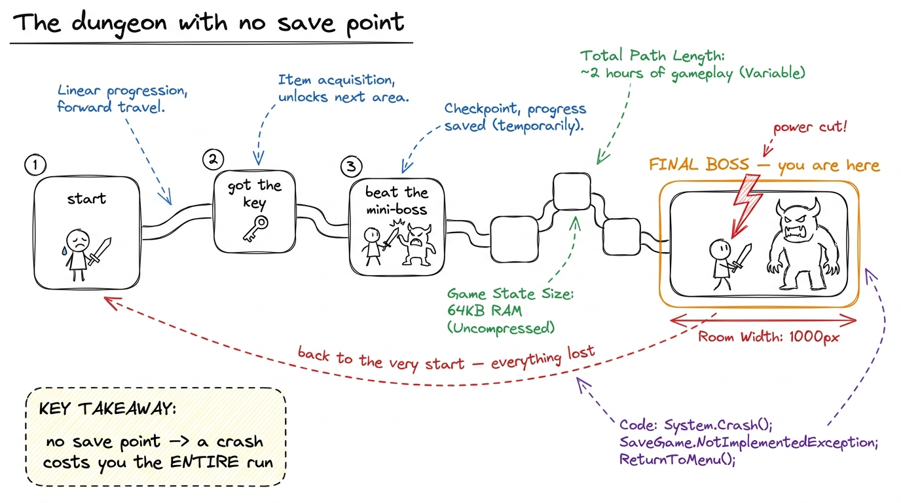
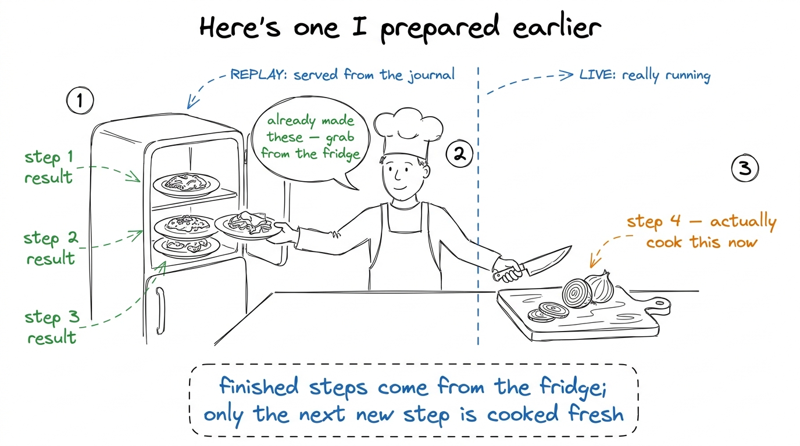
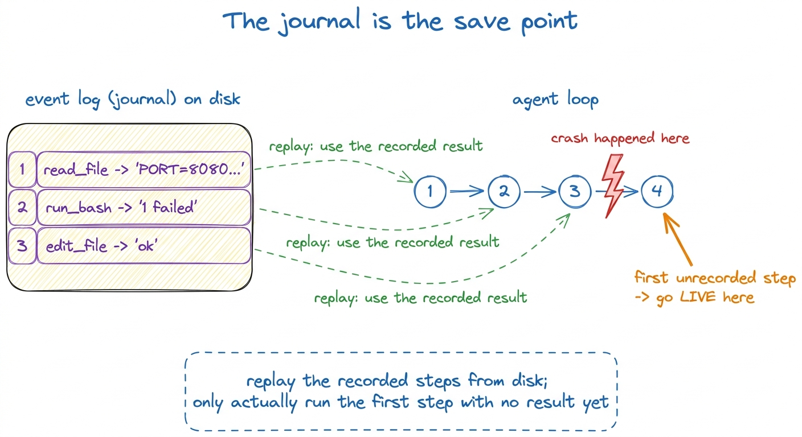
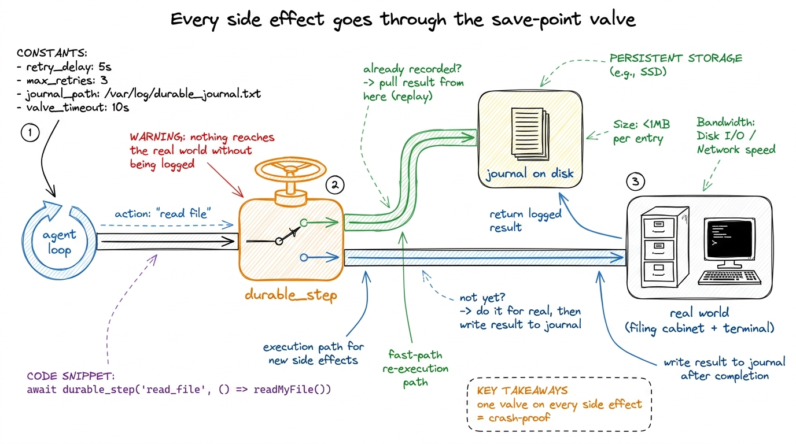
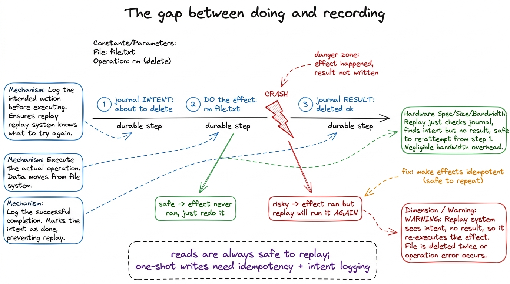

Teaching checkpointing & recovery
By the end of this chapter you can stand at a whiteboard and teach durable execution as plainly as a video-game save point — so clearly that a student who has only ever watched a program crash and lose everything suddenly sees how a coding agent can die mid-task, come back to life, and pick up exactly where it left off without redoing a single expensive thing. This is the durability layer. It's the piece that turns a fragile script into something you'd trust to run for an hour. So you must own it cold — and the good news is the whole idea fits inside one metaphor every gamer already lives by.
The one sentence to keep repeating all day: the agent's progress lives on disk, not in the running program. Say it early. Say it when the demo crashes. When that lands, the fear of "what if it dies halfway" simply evaporates.
Start with the pain: why a long agent run is terrifying
Before we say "durable execution," we feel the problem. Your agent loop from Layer 1 is a while loop that calls the model, runs a tool, calls the model again. A real task might take forty laps over twenty minutes. Now picture lap thirty-eight: the model has already read fifteen files, run the tests four times, made three edits. And then — your laptop sleeps. Or the API times out. Or you hit Ctrl-C by accident. The process dies.
Everything was in memory. Memory is gone. You start over from lap one, paying for all fifteen file reads, all four test runs, all those model calls again — in time and in dollars.

figure rendering · The pain we're solving, drawn as a game with no save point: one crashThe fix, in plain words: write down what happened, before you forget it
Here is the whole idea, and it's almost embarrassingly simple. Every time the agent finishes one real step, we write down what happened — to a file on disk — before we move on. Not the plan. The result. "I read config.py, here are its contents." "I ran the tests, here's the output." "The model said to edit line 40."
That file on disk is the save point. It has a name — the event log, or journal. It's an append-only list: every step, in order, with its result, written down the instant it completes.
Now the magic. If the process dies and restarts, the first thing it does is read the journal: "I already read config.py, here's what was in it. I already ran the tests, here's the output." It replays those recorded results instead of redoing the work — fast-forwarding through everything it already did, and picking up the live work only at the first step that has no recorded result yet.

figure rendering · Replay as a cooking show: finished steps are pulled ready-made from th step 1: read_file("config.py") -> "PORT = 8080\n..." step 2: run_bash("pytest") -> "1 failed, 4 passed" step 3: edit_file("auth.py", ...) -> "ok, 1 line changed" ` Now it crashes before step 4. We restart. The agent begins step 1 again — but *checks the journal first*: "step 1 already has a result." It doesn't open the file; it hands back "PORT = 8080..."` from the journal instantly. Same for steps 2 and 3. At step 4, the journal is empty — so now it really runs. Three steps replayed from disk in a millisecond; work resumes exactly where it stopped.
figure rendering · Replay in one picture: the journal fast-forwards through finished stepWhy replay returns cached results — and why that's the whole trick
Sit on this, because it's the exact place students get confused. On replay, when the agent "does" step 1 again, it does not re-open the file. It gets the old recorded answer handed back to it. The step is a no-op that returns a cached result.
This has to be true, and here's the reasoning to walk them through slowly. The agent's decisions were based on what step 1 returned. If replay re-ran step 1 and the file had changed in the meantime — a different result — the agent might make a different choice than it did the first time, and the whole recorded history downstream would no longer make sense. The journal is a record of this specific run. To resume that run faithfully, every already-completed step must return the same thing it returned before, exactly. So replay doesn't re-execute — it re-reads the answer from the log.
config.py between the crash and the restart. If replay re-ran the read, step 1 now returns a different value than the model originally saw — but the model's later decisions were baked into the journal based on the old value. You'd have a history that contradicts itself. So replay returns the original recorded value, not today's file. Draw it as: "the past is read-only."1 This is why the thing we journal is the step's result, not the step's plan. We record effects and their outcomes, keyed so that on replay we can match "this exact step" to "its exact recorded result." The technical name for keeping that mapping stable is making each step deterministically identifiable — same position, same call, same key. If you can't reliably match a step to its record, you can't safely replay it.
The one honest rule this buys you: journal at every side effect
Here is the discipline that makes durability actually work, and it's worth writing on the board in red. Anything that touches the outside world — reading a file, running a command, calling the model — must go through the journal. Do the effect once, write the result down immediately, and from then on always serve that result from the log on replay.
The pattern is always the same three beats: (1) check the journal — do I already have a result for this step? If yes, return it. (2) If no, actually perform the effect. (3) Write the result to the journal before returning it. Three lines wrapping every side effect. That's durable execution.
python def durable_step(journal, step_id, do_it): if step_id in journal: # 1. already done on a past run? return journal[step_id] # -> hand back the recorded result result = do_it() # 2. first time: actually run it journal[step_id] = result # 3. WRITE IT DOWN before returning save(journal) # (persist to disk right now) return result `` Every file read, every bash call, every model call goes through this. Nothing else changes about your agent loop. The loop from Layer 1 stays exactly the same — you've just made each of its side effects go through this little save-point valve.
figure rendering · Durable execution as plumbing: a single save-point valve sits on everyThe tension you must name: side effects don't un-happen
Be honest with the room about the sharp edge, because a smart student will find it. Replay is safe for reading — reading a file twice hurts nothing. But some steps change the world. If the agent already ran rm file.txt and then crashed before writing the result down, what happens on replay?
This is why the order in the wrapper matters, and it's a subtle, beautiful point. You do the effect, and you write the result down — and if you crash between those two, you have a problem: the effect happened but isn't recorded, so replay will do it again. Real durable systems fight this with two tools. First, journal the intent before acting too, so on replay you can at least detect "I was about to do this — did it finish?" Second, prefer effects that are idempotent — safe to do twice (writing a file with fixed contents is idempotent; appending a line is not). You don't need to solve this fully in the workshop, but you must name it, or a student will feel tricked later.

figure rendering · The hard edge of durability: a crash in the gap between doing an effecIn production, right now
This is not a classroom nicety — it's load-bearing infrastructure in the tools your students use. pi, the harness this workshop rebuilds, is built around exactly this: every step of an agent run is journaled, so a session survives a crash, a redeploy, or a machine swap and resumes mid-task without redoing work. Claude Code persists session state so you can close your laptop, come back, and continue a conversation with its full history and tool results intact — the transcript on disk is the save file. Beyond agents, this is a whole industry: Temporal and AWS Step Functions are systems whose one job is durable execution by replay — they journal every step of a workflow so it survives any crash and resumes exactly where it stopped. When your students build the eight-line durable_step wrapper, they are building the miniature core of Temporal.
The morning lecture plan (7:00–9:00 AM IST)
Two hours, three blocks, one live BUILD each. The whole chapter builds to one demo — crash it, resume it — so protect the time for it.
Block 1 — the pain and the save point (7:00–7:40). Open cold with the no-save-point dungeon (7:00–7:12): tell the heartbreak story, draw the level, let them feel the loss. Then reveal the fix — the journal as save point — and the cooking-show "here's one I made earlier" metaphor (7:12–7:30). Live build: take the Layer-1 agent loop and run a task that takes ~5 laps; print each step's result as it happens, so they see the progress that would be lost (7:30–7:38). Checkpoint question: "Right now, if I kill this process at lap 4, where does the progress live — and is it recoverable?" (Answer: in memory only; not recoverable.)
Block 2 — the journal and replay (7:40–8:25). Draw the journal-on-disk figure and walk the three-step trace by hand (7:40–7:58). Then land the core idea — replay returns cached results, it does not re-run — and drill the confusion with the "someone edited config.py between runs" break (7:58–8:12). Live build: write the eight-line durable_step wrapper live and route the tools through it; show the journal file filling up on disk with each step (8:12–8:25). Checkpoint question: "On replay, when the agent 'reads' the file again, does it open the file?" (Answer: no — it returns the recorded result from the journal.)
Block 3 — crash and resume, then the honest edge (8:25–9:00). The centerpiece demo (8:25–8:45): run the durable agent, and kill it mid-task — Ctrl-C at lap 4. Then run the exact same command again. Watch it fast-forward silently through laps 1–3 from the journal and go live at lap 4. Count the model calls it didn't make. Then name the sharp edge (8:45–8:57): side effects don't un-happen, journal-order matters, idempotency, and the "crash between doing and recording" question. Close on the production link (8:57–9:00): this is Temporal, this is pi. Checkpoint question: "Who saved the agent's progress — the model, or our journal on disk?"
durable_step code until after the by-hand journal trace in Block 2. If you show code first, students memorize syntax and miss the idea. Trace three steps on the board, crash, replay from the log by hand — pointing at each written row — then reveal that the code is just those pointing-motions written down. When you finally show the eight lines, someone should say "oh, it's just checking the list first." That recognition is the goal; the code should feel like notation for something they already did with their finger.You can now teach
- The pain — a long agent run that dies loses everything, because progress lives only in the memory of the running process — using the no-save-point dungeon.
- The save point: the append-only journal on disk, written after every step, and the cooking-show "here's one I made earlier" picture of replay.
- Why replay returns cached results and does not re-run — the past is read-only, and re-running would let the recorded history contradict itself.
- The eight-line
durable_stepwrapper — check the journal, else do it and write the result down — and that it wraps every side effect while the Layer-1 loop stays untouched. - The honest edge: side effects don't un-happen, so journal order and idempotency matter — named plainly, not hidden.
- The production link: this is how pi survives crashes mid-task, how Claude Code lets you close your laptop, and the miniature core of Temporal / Step Functions.
- The full 7:00–9:00 AM lecture: three blocks, one live build each, and the crash-at-lap-4-then-resume demo that makes durability unforgettable.